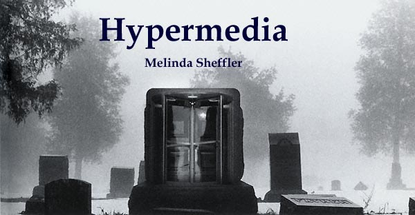

| 
This
is part of an ongoing mission to understand and explore the ways
Hypermedia changes the way we think and learn.

-Seminar
Paper
Fall
2003
PERSEUS: History
Mission Statement:
“Our primary goal is to bring a wide range of source materials
to as large an audience as possible.”
This is a summary of the history, purpose and
research of the Perseus Project.
http://www.perseus.tufts.edu/
Planning began: 1985,
-A small team of classicists, led by Gregory Crane, wanted to
create a database of primary texts that would be available to
their students for class projects and research. They had no higher
dreams of world domination via the Internet. This was strictly
an in-department project for Tufts University.
Hypertext began: 1989,
-Apple Hypercard was used to form the actual text because it was
the most advance cataloging system of the time that would serve
their purposes.
-By now the project had consumed enough time and energy the
department was ready to make some sort of monetary return from
it. A plan was laid to create a “CD-ROM package that contained
many of the primary readings and resources that students taking
classics courses would need and to make this package available
for the cost of one or two textbooks.”
Product Released: 1989-1996
-A CD-ROM version (Perseus 1.0) was produced and published by
Yale University Press in 1992 (now out of print) and a second
Macintosh version (Perseus 2.0) was made in 1996.
Since 1996:
-Perseus has hit the Web. It now “includes more than 225
Gigabytes of texts, images, maps, and indexes and garners 300,000
HTTP requests per day mainly at the Tufts site but also at European
mirror sites in Oxford and Berlin."
-Commercial encyclopedias as well as hundreds of syllabi at
universities and K-12 institutions around the globe link to Perseus.
A spin-off organization, Stoa, has been created to support research
and electronic publication for humanities scholars, and Tufts
university has begun to support the Perseus Digital Library as
part of its fixed annual budget. All of these things tell us that
Perseus is not a fly-by-night website, up today and gone tomorrow,
but a fixed resource.
-Gregory Crane is still the Editor-in-Chief of Perseus and he
remains highly active in that role. However, Perseus is no longer
a bunch of Classicists huddled around an old Mac. It requires
a full time staff that associates and discusses projects with
people around the world. Perseus also has three mirror sites (Chicago,
Berlin, and London), run by larger universities in those cities.
What is Perseus?
Or, how is Perseus a unique Web resource?
It’s FREE
-There are other digital libraries out there on the Web, however
few of them are free. Most digital libraries, especially ones
of quality, make you pay a fee for full text articles or specialized
information. Association for Computing Machinery (ACM), for instance,
makes you pay 10 dollars per article if you are not a member (http://portal.acm.org/faq_dl.cfm?coll=portal&dl=ACM&CFID=13941031&CFTOKEN=79531107
).
Thousands of Entries
-There are thousands of original texts, typed in by professionals.
Secondary sources are linked to the primary ones and visa versa,
making Perseus more than just a repository for old manuscripts.
The secondary sources are written by reliable people from several
different areas of the world and in several languages (largely
German and French).
Reading support
-Perseus includes both "automatic linguistic services for
multilingual and summarization services for multilingual and monolingual
readings" (Crane 8). This service is especially important.
For example:
If I want to read Christopher Marlowe’s "On the Death
of Sir Roger Manwood" in its original Latin I can do that,
even if my Latin is atrocious. Out of Marlowe’s fourteen
line poem, only three words are unlinked to a Latin/English dictionary
entry. One of those three words is a name. All I have to do is
click on a word and a dictionary meaning appears in a secondary
window giving me the words meaning in context and were I can find
that Latin word in other Latin texts in Perseus and outside of
their databanks.
The same help is given with ancient Greek texts like Aeschylus’s
Prometheus Bound (ed. Herbert Weir Smyth, Ph.D.), which
is entirely linked. Not only is it linked, but each the dictionary
also tells how many times Aeschelus used that word, how many times
that word is found in other famous Greek texts, and gives links
to those other texts within Perseus. So, if I click on "aterpês"
in Prometheus Bound the dictionary tells me Aeschylus
used that word twice and other authors used it seventeen times.
If I click on the "17" I receive the seventeen sections
of text where the word occures for other Latin texts. This particular
part of Perseus is the element most important to Hypertext discussions.
Not only is it unique to link each word of a text to a dictionary
entry, but the intertextuality of each link gives the work a deeper
and more useful quality for research.
Note: Dictionary linking is done only for primary texts. Secondary
resources are left unlinked if they are in a language other than
English.
Special Exhibits
-Perseus regularly groups certain portions of their collection
into museum-like exhibits. They currently have one on Hercules.
It is a unique exhibit, because it contains a unique grouping
of material, some of which is unavailable on other parts of the
Web.
http://perseus.mpiwg-berlin.mpg.de/Herakles/
PERSEUS: Purpose & Research
Perseus’s purpose has changed over the years. Its original
key purpose was to create a resource of source materials that
was easy for their students to access. That purpose has been fulfilled
and remains, but another one has risen to take its place in importance.
The people of Perseus refocused their attentions on how Perseus
has been used since it went online. By understanding how audiences
use online digital libraries like Perseus, they hope to keep their
project not only up-to-date and useful, but also to learn something
about how people learn from hypertext.
Three core topics of research:
1. How networked digital libraries serve established but also
reach new audiences
2. The services that cultural heritage digital libraries need
to support
3. The document structures that provide the basis for these services
Models as Text
What if you could search a picture the same way you search a piece
of text? Perseus researchers want to create, using XML, objects
that have enough embedded information in their code that they
can be searched (Milbank). So, if I want to see a Doric column,
I don’t just get pictures of Doric columns. I can get a
picture of a temple that has Doric columns. Ultimately, I’ll
be able to zoom in on the column, or separate it from the temple
completely for a better look .
Walking in London Town
"One of our current research projects is to explore the extent
to which geographic visualization tools can help readers grasp
the complex temporal-spatial interactions that shape many (especially
historical) documents. For cultural digital libraries, time and
space are crucial categories of information. Our goal is to develop
a temporal-spatial front end for digital libraries, including
the Perseus project [1]. To accomplish this goal, we have developed
a testbed on the history and topography of London. The testbed
includes dense and precise quantities of temporal and geospatial
information embedded in texts, maps and images. We have been seeking
ways to disambiguate and link automatically the information found
in the collection" (Crane).
Walk Down King William St. --
http://www.perseus.tufts.edu/cgi-bin/image?lookup=Perseus:image:2001.07.0001
Combining these last two features is not in the works, but I
think it would be a great asset to learning. If a child could
walk through a digital representation of ancient Rome with search
capabilities in each picture he/she could search for certain types
of buildings, which the computer could then take him to see. The
child/learner would then see the building in its original context.
Technobabble -Trying to generalize the system for mass
consumption
"One of the strengths of our document management system is
its flexible, modular display front end. We present texts in HTML
over the Web, but have also experimented with presentation in
XML and in Adobe's PDF. Readers can request display of a section
of a document, using the standard citation scheme for the text
if there is one (for example, book and line for Homer's Iliad,
or book, chapter, and verse for the Bible). The document system
identifies the desired section based on structural metadata provided
by the DTD mapping engine and converts it to display format based
on a template supplied by the corpus editor or digital librarian"
(Mahoney).
Basically, Perseus is exceptionally searchable. Amazing, since
this program started long before search engines ruled the internet.
What this shows it the amount of thought that went into this work
before it ever touched a computer screen.
What do you add? What do you leave out? Perseus
gives advice based on their research.
As far as antiquated collections go, add small. This doesn’t
mean add a small number of pictures; add pictures of things that
are small. Small things don’t receive the attention they
deserve in a museum setting because larger things catch the eye
quicker.. Coins are rarely noticed next to a suit of armor. Transversely,
large objects do not work as well on the Internet. A set of clothes
from NA Indians is not as eye-catching as a picture. Large objects
need live viewing, because the number of details for a larger
subject are limited in size to a computer screen on the internet.
There is much more at:
http://www.perseus.tufts.edu/Articles/MW2000.html
Bibliography
Crane, Gregory, Clifford E. Wulfman, Lisa M. Cerrato, Anne Mahoney,
Thomas L. Milbank, David Mimno, Jeffrey A. Rydberg-Cox, David
A. Smith, and Christopher York. Towards a cultural heritage digital
library. In Proceedings of the 3rd ACM/IEEE-CS Joint Conference
on Digital Libraries, JCDL 2003, pages 75-86, Houston, TX,
June 2003.
Crane, Gregory. Designing documents to enhance the performance
of digital libraries: Time, space, people and a digital library
of London. D-Lib Magazine, 6(7/8), July/August 2000. http://www.dlib.org/dlib/july00/crane/07crane.html.
Crane, Gregory R. (ed.) “Information about Perseus.”
The Perseus Project, http://www.perseus.tufts.edu,
November, 2003.
Daniels, Maria. Is bigger better? web delivery of high-resolution
images from the Museum of Fine Arts, Boston. In Proceedings
of Museums and the Web, 17-19 April 2000. http://www.perseus.tufts.edu/Articles/MW2000.html
Mahoney, Anne, Jeffrey A. Rydberg-Cox, David A. Smith, and Clifford
E. Wulfman. Generalizing the Perseus XML document manager. In
Linguistic Exploration: Workshop on Web-based Language Documentation
and Description, Philadelpha, December 2000. http://www.ldc.upenn.edu/exploration/expl2000/papers/mahoney/mahoney.htm.
Marchionini, G. (in press) "Evaluating Digital Libraries:
A Longitutidinal and Multifaceted View." Library Trends:
http://ils.unc.edu/~march/perseus/lib-trends-final.pdf.
Milbank, Thomas L.. Excavating the hard drive: Archaeological
research, XML, and 3D graphics. In 16th International Congress
of Classical Archaeology, Boston, MA, 23-26 August 2003.
|